Scaling properties of ride pooling efficiency and minimum fleet size
Steffen Mühle, Heidemann group
Max-Planck Institute for Dynamics and Self-Organization, Göttingen
|
simulation + theory |
Simulations
- map
- number of buses
- dispatcher
- request statistics
- user constraints
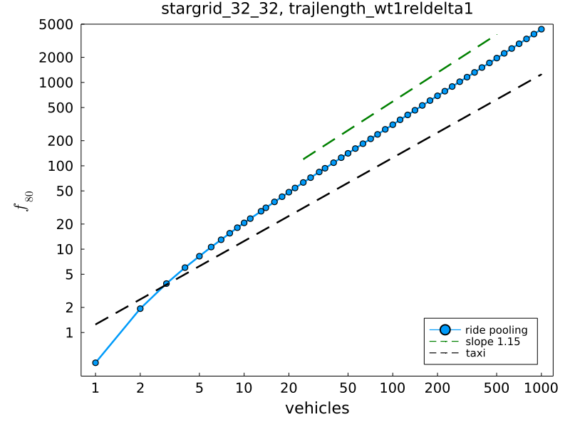
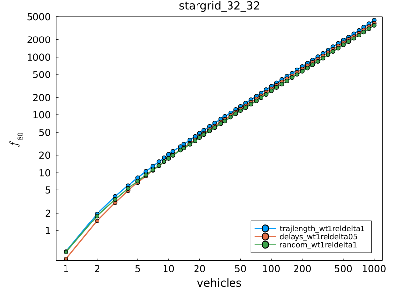
| 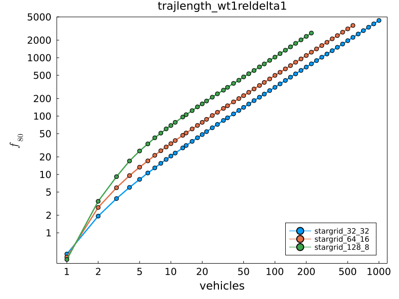 |
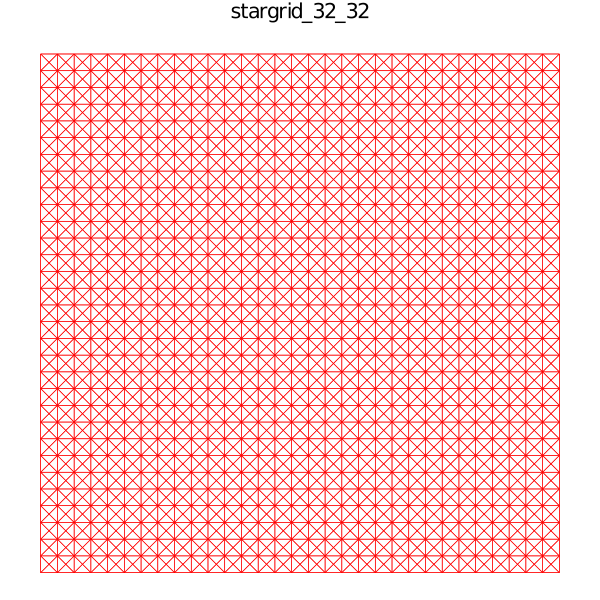
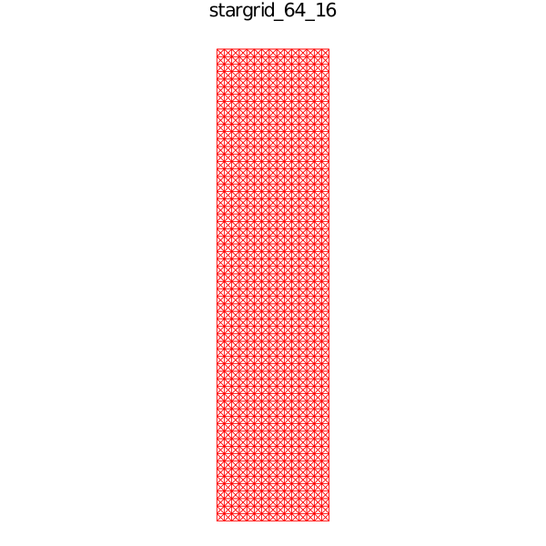
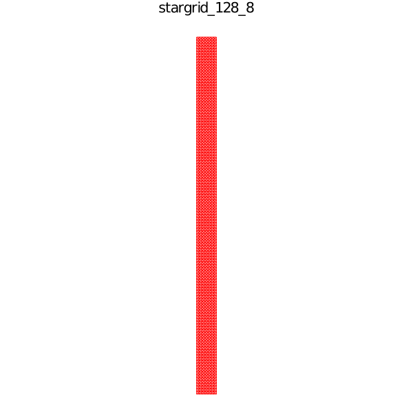
|
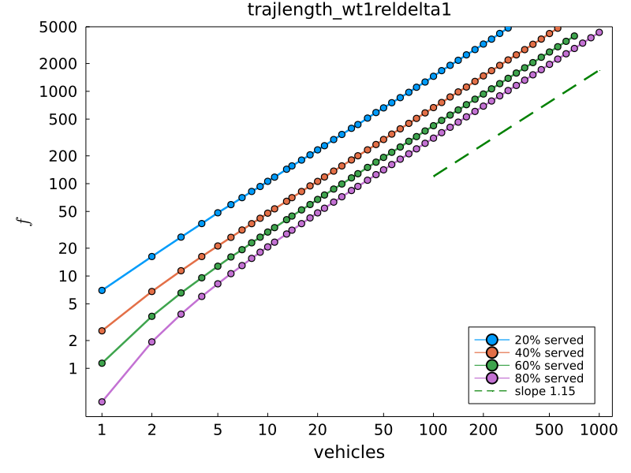
Theory
Can we model the function \(f_{80}(N)\) from scratch?

|
\[ \begin{aligned} \langle Z\rangle&=\sum_{z}z\,p(z)\\ &\fragapply{fragment 3}{=\sum_{z}z\sum_{y}p(z|y)p(y)}\\ &\fragapply{fragment 4}{=\sum_{z}z\sum_{y}p(z|y)\sum_{x}p(y|x)p(x)}\\ &\fragapply{fragment 5}{=\dots} \end{aligned} \] |
| 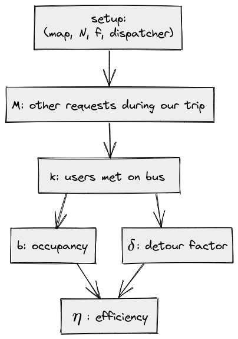 | \[ \begin{aligned} \langle\eta\rangle=\int\,\text{d}\eta\,\eta\underbrace{\sum_{k}\color{blue}{p(\eta|k)}\underbrace{\sum_M\color{red}{p(k|M)}\,\color{green}{p(M|f)}}_{p(k)}}_{p(\eta)} \end{aligned} \] \[ \begin{aligned} &\fragapply{fragment 1}{\color{green}{p(M|f)}=e^{-\Lambda}\dfrac{\Lambda^M}{M!}\quad\text{ where }\Lambda=f\cdot T\Rightarrow\langle M\rangle\propto f}\\ &\fragapply{fragment 2}{\color{red}{p(k|M)\}}:\,\,\text{insertion model}}\\ &\fragapply{fragment 3}{\color{blue}{p(\eta|k)}:\,\,\text{ellipse model}} \end{aligned} \] |

 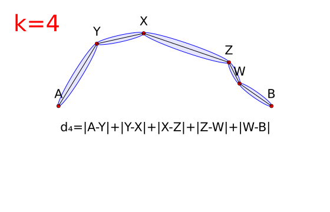
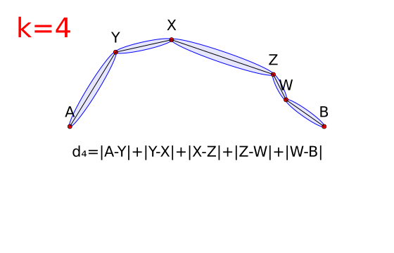
|
\[ \eta_k=\frac{b_k}{d_k/d_0}\\ b_k=1+\dfrac{k}{2}\\ d_k\rightarrow d_\text{max} \] ellipse model related to ref.: [1] |
|
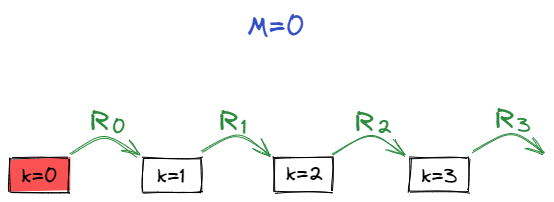
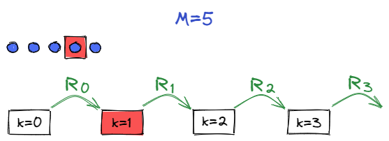
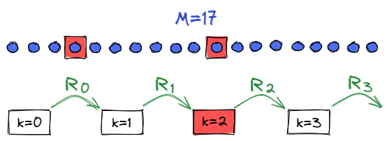
|
| $\color{red}{p_\text{pickup}}\propto\text{ellipse-area}=\dfrac{\pi}{4}d_\text{max}\cdot\sqrt{d_{\text{max}}^{2}-d_{k}^{2}}$ | $\color{blue}{p_\text{dropoff}}=\dfrac{\phi}{2\pi}$ |
|
|
 |
 |
Conclusion
- ride pooling more efficient for more demand
- efficiency dictates minimum fleet size
- fleet size follows weak power law
- scaling independent of dispatcher
- model: emergent power law without fit parameters!
Scaling origin
\[\fragapply{fragment 1}{\eta=\dfrac{b}{\delta}\sim b\propto k}\\ \fragapply{fragment 2}{\Delta M\sim R_{k}^{-1}\sim c^{k}}\\ \fragapply{fragment 3}{\Leftrightarrow\quad k\sim\log(M)\sim\log(f)}\\ \fragapply{fragment 4}{\Rightarrow f\propto\log(f)\cdot M}\\~\\ \fragapply{fragment 5}{R_k\text{ dictates scaling properties}}\]
Outlook
| 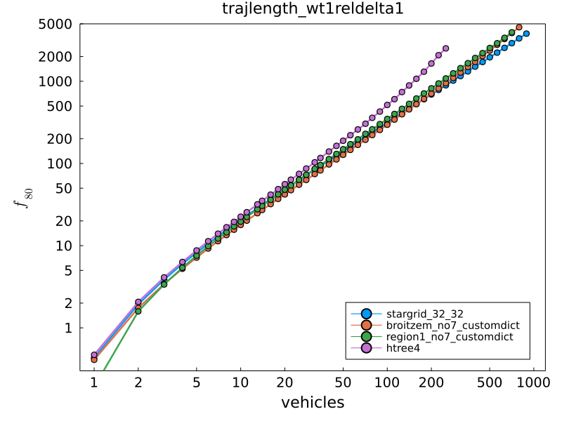 |
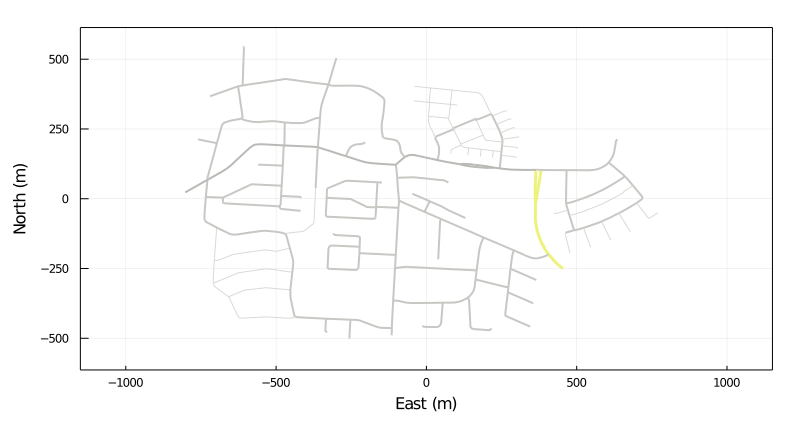
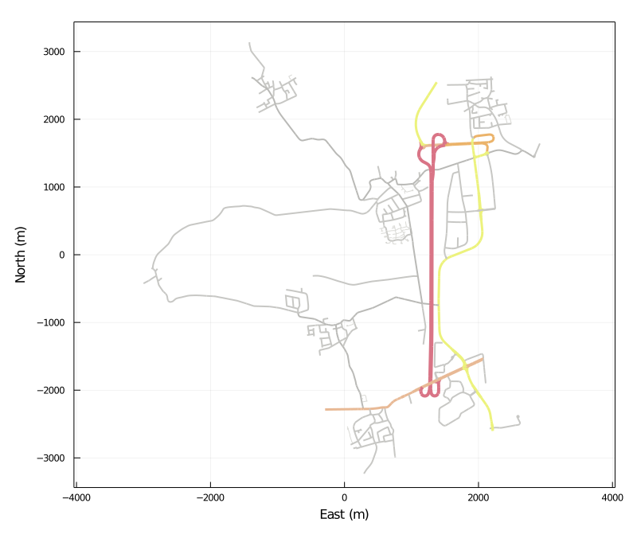
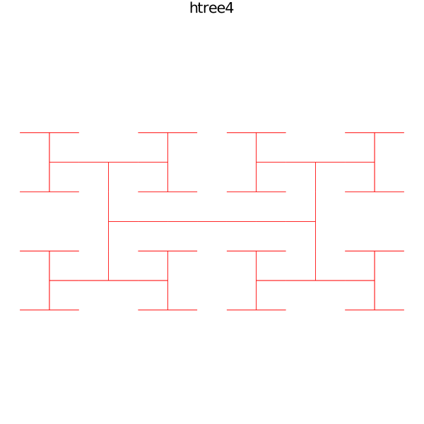
|
What's next?
- model $R_k$ for graphs
- link this to known concepts such as
- shareability [2]
- route volume growth [3]
- graph centrality [4]
- try more sophisticated dispatchers like [5]
Questions?
get in touch: steffen.muehle@ds.mpg.de
References:
- Herminghaus: Mean field theory of demand responsive ride pooling systems (2019)
- Tachet et al.: Scaling laws of urban ride sharing (2017)
- Manik et al.: Topology dependence of on-demand ride-sharing (2020)
- Kirkley et al.:: From the betweenness centrality in street networks to structural invariants in random planar graphs (2018)
- Alonso-Mora et al.: On-demand high-capacity ride-sharing via dynamic trip-vehicle assignment (2017)